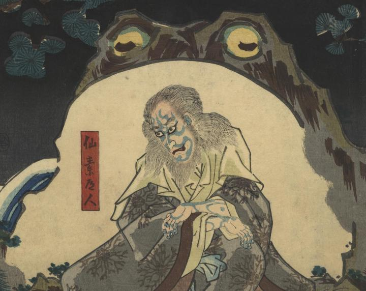

児雷也に蝦蟇の妖術を教えた仙素道人の背後に大蝦蟇が立っている。
著作者：豊國／出典：親書誌：U426_nichibunken_0335：児雷也豪傑譚語；ジライヤ ゴウケツ モノガタリ／日付：2014／資源識別子：U426_nichibunken_0335_0001_0000
Copyright (c)2010- International Research Center for Japanese Studies, Kyoto, Japan. All rights reserved.